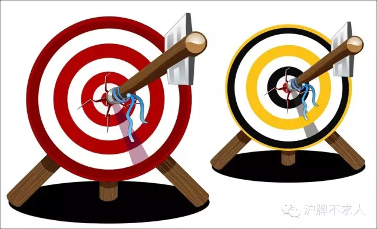

如果你还不太了解具体的沪牌竞拍流程，请关注“沪牌不求人”微信公众号，点击右下角的“拍牌流程”菜单，我们一共为你提供了“预备篇”，“网拍篇”和“原则篇”三大篇。只有了解了拍牌流程和原则，才能轻松读懂下面的拍牌策略。
~~~~~我是华丽丽的正文分割线~~~~~
我们今天着重为大家带来的是大家最为关心的拍牌策略，传统策略篇。
第一种方法我们叫她“猜猜猜大法”。顾名思义，就是你事先根据理论也好，灵感也好，历史数据分析也好，不管三七二十一事先猜一个此次很可能成交的价格，输入进去，打好校验码不提交，然后坐等接受处理价格区间滚动到这个价格，你就闭着眼睛按出价就好。如果你不管是因为狗屎运还是神显灵猜对了，这个价格正好是此次最终成交价的范围内，那么恭喜你，只要符合成交原则（在“沪牌不求人”微信公众号的右下“拍牌流程”菜单里可以找到“原则篇”），你就中标了！

第二种方法我们叫她“黄牛法”。大家都知道先画靶后射箭吧，在这个游戏里怎么提高射箭命中率呢？如果想象一下你能画多个靶铺开来，是不是比别人画一个靶的命中率要提高很多呢？这个方法的本质就是用多张标书，按照不同的价格来执行第一种“猜猜猜大法”，以扩大猜价覆盖范围来提高命中率。假设我第一张标书，猜83000，覆盖了82700-83000四个最低成交价，然后我另一张标书，猜83300，就又覆盖了83000-83300的范围。以此类推，如果你们夫妻两个，爸爸妈妈都有驾照，四个人买四份标书，就可以大大提高猜价的覆盖范围了。当然前提是你先不要买车，因为沪牌的名字必须和车子发票的名字一致。
以上这个方法，之所以被称为黄牛法，是因为黄牛手上就有很多份标书。黄牛就是用这种方法来保证自己的命中率。对黄牛来说并不在乎你一个客户中不中，他们只要总数拿得多，靶画得够大，他总的命中个数有保障，那么这个月的收入就棒棒哒。所以那些几万块交给黄牛拍牌的小伙伴们，还不如动员你家人一起来考个驾照，自己给自己当黄牛呢。就算你只有一个标书号，那我也可以很负责任地说，你用第一种方法的猜中率和给黄牛代拍的命中率也指不定谁谁占优呢。
最后我们讲讲最近流行的第三种方法“动态伏击法”。如果你之前听到过什么48秒+600元或者50秒+500元，那这就是我们所说的动态伏击法了。这种方法根据历史经验，大数据挖掘，算出在一定的竞拍人数和投放额度比例下，比如在第29分48秒的时候，在目前最低中标价上加600元，然后输入校验码，这样的动态生成价格方法最有可能击中。这具体的数据分析，和对应的方法策略值，我们会另开文详细说明。
至于为什么要到48秒或者50秒来根据目前最低成交价算出动态价格，首先你必须看过了“沪牌不求人”公众号界面右下角“拍牌流程”菜单的“原则篇”，理解了根据沪牌成交原则，历史上一般只有在最后几秒出价有效的才能中标，所以动态伏击法的精髓在于利用最后十几秒(如48秒)的当前最低成交价，根据之前的大数据分析（如加600元），推算出更精准的最终成交价。其次你要知道拍牌出价之后，需要你填写一个逆天的校验码，你必须给自己留足够的时间看清楚并且不填错，所以根据一般人的手快程度，48秒是比较保险的策略，而50秒是属于偏激进的策略。你现在不全理解也不要紧，关于这个方法的具体流程，我们会另开文，并在拍牌软件的视频里有详解。
如果你还没关注我们，提高逼格的方法狠简单：打开微信，扫一扫上面二维码，关注“沪牌不求人”，更多沪牌竞拍策略分析，流程科普，各类汽车相关，接地气姿势，尽在这里！
我们是一个认真把干货做有趣，坚持原创不转弯的公众号。 你，值得拥有！